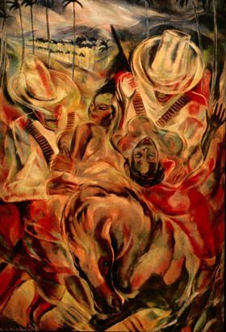

|
The crisis in representation encountered by the European avant-garde in the early 20th century and its subsequent turn to African forms is described in the following terms by African-American art historian Alain Locke in 1925: Out of the exhaustion of imitating Greek classicism and the desperate exploitation in graphic art of all the technical possibilities of color by the Impressionists and Post Impressionists, the problem of form and decorative design became emphasized . . . the African representation of form, previously regarded as ridiculously crude and inadequate, appeared cunningly sophisticated and masterful.1 Locke’s words are particularly important for his perspective as an American and as a person of color. As Locke points out, this new emphasis on form becomes the motivating force behind the work of the European modernists. In terms of the development of the history of art, this period is central to the introduction of Modernism on a world-wide scale. The first few decades of the twentieth century usher in the establishment of a truly international movement, which we might call the global avant-garde. In the Americas, this avant-garde is significantly marked by a turn to indigenous and racialized forms in the search for a national model of aesthetic production. I would like to "rethink the avant-garde from the periphery," in the words of sociologist and cultural critic George Yúdice, specifically from the perspective of early 20th century painting in Cuba. In particular, I would like to use the works of Carlos Enríquez to consider the development of the avant-garde in Cuba in relation to European Primitivism and its subsequent reformulation in the New World. While the avant-garde in the Americas appropriated some of the stylistic and technical elements of the European avant-garde, the resulting aesthetic production and its ideological references were vastly different. Carlos Enríquez is of particular interest because his legacy consists of both textual and visual work. Representations of Cuban life in his paintings and his novel show the avant-garde as a global movement in which artists throughout the Americas participated on the same level as their European counterparts. Recognition of the avant-garde as a global phenomenon will enable a subsequent revision of the paradigm of imported modernity and the New World. In his attempts to place the Latin American avant-garde within the context of a global movement, George Yúdice makes the following observation on the paradox of being modern in the New World: . . . the [creation of a] new art also entails, on the one hand, confronting European tradition, and on the other, competing with the European avant-garde rejection of that tradition . . . either they seek to be modern like the Europeans or they resort to a primitivism, albeit autochthonous, which the Europeans themselves have called for in order to regenerate a supposedly decaying civilization. In either case, the Latin American is condemned to be either Europe's "civilizational double" or its "civilizational other."2
This, as Yúdice points out, is the dichotomy constructed from the perspective of the center. If we look at the interstices of modernism’s center, however, we see in it artists and objects from the periphery invading the "sacred space" of the center, acting as interlocutors and bringing the Modern both into the center and outwards toward the periphery. The presence of artists from the Americas in Europe, coupled with the presence of non-Western objects is the "unwritten history of the avant-garde."3 This circulation of objects and artists is central to the renegotiated modernity of the Americas. In the New World, appropriating School of Paris aesthetics and combining them with nationalistic subject matter meant being neither Europe's civilizational double nor its civilizational other. The nihilistic tendencies of many avant-garde movements leads to their characterization as intent on breaking with the past and with academic traditions. Artists in the Americas, rather than rupture with the past, there is an attempt to rearticulate collective identity in reference to history. The history and legacy of colonialism makes real rupture impossible and to desire it is self-defeating. Dealing directly with the past and with the national culture created out of this history became part of the trajectory towards modernity. Along that same route, they embraced aesthetic ideologies such as Indigenismo or Negrismo not due to mandates of the center, but because of their position in relation to it. In looking at three major paintings created during the first decade of the 20th century, we can see immediately the iconography which the European avant-garde dictated to be "modern." Picasso’s Demoiselles d’ Avignon, Matisse’s Blue Nude and Derain’s Bathers were all painted around 1907. The central image of each of these works can be reduced to three highly revealing words: nude, female, and brown. The confrontational nature of the nude female bodies in these paintings is emphasized through the artists' insistence in painting bodies that were not only large but also coded as non-white. While there can be do doubt that this obsession with a racialized and primitivized subject influenced the perception of modernity in the New World, the renegotiation of this modernity from a space adjacent to the center gave new meaning to the avant-garde in the periphery. If we look at some of Carlos Enríquez's images, we can understand how European notions of the avant-garde were transmitted to and translated within the New World. This New World Primitivism is most evident in Enríquez’s work between 1935 and 1945. Images such as this untitled portrait of a nude woman from 1940 take Picasso’s work as a point of departure but further racializes the figure, characterizing both her features and body parts as distinctly black. The avant-garde in the Americas was interested in creating a modern identity based around a loosely-constructed definition of nation in which race played a major role. Since the 19th century, race and miscegenation constituted a major element of visualizing national identity in the Americas. This, in addition to novels and poetry that emphasized the syncretic nature of life in the Americas, was central to the creation of a modernity which included the racialized individual as a definer of the self, rather than the other. In 1939, Carlos Enríquez published his novel, Tilín García, which tells the story of a few days in the life of a Cuban guajíro. The guajíro, or peasant, might be more accurately translated as "cowboy" for the work of Carlos Enríquez. This figure is depicted in both Enríquez's written and painted work as the archetype of masculinity; "el macho de los machos." The modern guajíro and his relationship to the land are epitomized in an excerpt from Enríquez's novel. Here, the cowboy contemplates the surrounding landscape from atop his horse: He contemplated a wild orchid which silently sucked the trunk of a small tree like a parasite. Suddenly, he took out his pistol and, quickly raising his arm, took a shot. A violet zig-zag was created by the torn orchids which flew into the air before falling to the ground. A hundred birds were projected into the air, . . . Flowers evoked for him tenderness, embodied the softness and the scent with which a woman uncovered the most hidden essence of his maleness. Without knowing it, he was one of those primitive men, of elemental emotions. In him, the women admired his violent decisiveness in love-making, his lack of femininity and the impetuous savagery with which his desires were translated into actions. He was earthy, emanating from the ground, like an animal he could perceive the occult and the supernatural which originate from the earth . . . He came to feel oppressed by the delicateness of the landscape and, like an automaton, urinated on the wildflowers which colored the fields yellow, white, purple and yellow [sic]..4 The visual parallel to this excerpt is found in paintings such as Combate or Combat from 1941. Unlike the peasant figure seen in most images by the Cuban avant-garde, Enríquez’s vision of the guajíro is unique. In Combate, he confronts the viewer with a battle between two guajíros, championing his subject as the ultimate signifier of Cubanness. As in the novel, the Cuban cowboy here defines the space which surrounds him as masculine, aggressive and closer to the primitive savage envisioned by the European avant-garde. This icon of Cuban masculinity appears throughout Enríquez’s work, marking it as his image of the new and the authentic in Cuban art. A paragon of criollismo, or New World identity, the guajíro simultaneously embodies the Cuban landscape and the history of independence. In El Rey de los Campos de Cuba or The King of the Cuban Fields from 1934, the blade of the guajíro’s knife is even stained with the blood of a recently felled enemy. Dominating the Cuban countryside, the figure of the cowboy looms large in the foreground of the painting. Behind him, the rolling hills of the landscape follow the forms of his broad-brimmed hat, outlined by a series of palm trees. This arrangement of the landscape in reference to the centrality of the masculine figure underlines the relationship of the guajíro to the land, as described in the passage. With the knife in one hand and a revolver in the other, the absolute power of the Cuban hero/cowboy/bandit in the image is rendered iconic. This regal figure epitomizes Enríquez’s vision of the guajíro much as the narrative in his novel. Based on the historical figure of Manuel García, Enríquez’s hero/bandit reinscribes local narratives through an iconic image. Manuel García became an important figure in the Cuban movement for independence, having declared war on Spain in 1891. He also proclaimed himself the King of the Cuban countryside in defiance of the Spanish monarchy. The hero/bandit subject, as exemplified in the persona of Manuel García, is a perfect figure for the imaging of masculinity. A hero for the common people, the figure presented in Enríquez’s painting walks the fine line between saint and criminal. Like the historical figure of Manuel García, Enríquez’s vision of him in this painting and his construction of the main character in Tilín García, stand as reflections of Cubanness, masculinity and modernity. Although Enríquez is often cited as a follower of Surrealist tendencies, in his works from the 1930s he acts as a New World primitivist. Having lived in Europe between 1930 and 1934, Enríquez culled first-hand knowledge of the style and theories of Surrealism and was certainly familiar with European primitivism. Upon his return to Havana, he began to study Cuban folklore. This, in addition to his admiration of the work of the Spanish poet Federíco García Lorca, was pivotal to his aesthetics on his return to Havana.5 In his collection of poems Romancero Gitano, Federíco García Lorca relates the sexual act directly to the act of riding horseback. In a poem from this collection, titled "The Unfaithful Wife," the accouterments of a cowboy are removed like the underclothes of the woman:
Enríquez was certainly familiar with these poems which were written between 1924 and 1927 and published shortly thereafter. Between 1927 and 1930, Enríquez traveled back and forth several times between Havana and New York City. During this same period, Lorca traveled extensively, lived in New York City for several months and made occasional trips to Havana. Enríquez’s admiration of Lorca's Romancero Gitano is certainly the inspiration for the genre of works he calls "romancero guajíro."8 In these visual ballads, the gitano of the Spanish modernist’s poetry is replaced by the Cuban guajíro, the modern metaphor for the Cuban spirit. García Lorca's conflation of the female body and the horse in this poem is equally prevalent in Enríquez' work, where the horse and the nude female both signal sexuality and are often juxtaposed. This conflation of cowboy, horse and woman is mythologized in perhaps the most well-known of Enríquez's works, El rapto de las mulatas or The Abduction of the Mulatas from 1938.  In this "cowboy fantasy," the iridescent flesh of García Lorca’s poem is replaced by a rich brown. The prominence of this bare brown flesh is a strong contrast to the figures of the men, armed to the hilt, their faces conveniently hidden by the brims of their hats. This masculinist depiction is flavored in much the same way as works by the European avant-garde, evident particularly in the availability of the women and the frantic energy that invades the pictorial space. The stylistic elements of Surrealism, seen here in the transparent qualities of the figures, are used to heighten the emotional or, more succinctly, primitive aspects of the image. The narrative, unfolding like García Lorca’s poetry, glorifies the modern primitive figure of the guajíro9. The act of miscegenation alluded to here, however, relocates the image immediately and underlines its clearly non-European subject matter. By using the racialized figure of the mulata, the icon of the guajíro and the landscape scattered with palm trees, Enríquez locates the genuinely Cuban within the space of the modern, as defined through New World primitivism. While the machismo of this painting and its underlying racist assumptions should not go unacknowledged, I believe an instructive understanding of Enríquez’s visual and written work within his time period can be gained by recognizing his close attention to social and political factors. In his novel, Enríquez underlines the relationship of the sugar industry and the political role of the United States to social reality in Cuba. As the main character, the guajíro-philosopher observes life in the Cuban countryside and links the living situation of both black and white peasants, to the demands of Wall Street.10 What the artist/writer calls "sugar cane fever" engulfs the Cuban countryside and its inhabitants in a never-ending chain of domination and submission which ultimately dictates the social reality of the poorest people, the Afro-Cubans. The relationship of this underclass to the guajíros is emphasized by the similarity of speech patterns in the text, which Enríquez spells phonetically. This modernist use of phonetic spelling in the construction of the unsophisticated accents of the humble characters again underlines Enríquez’s participation in the avant-garde. The mutual understanding of the guajíro and the poorest Afro-Cuban is inscribed by Enríquez against the common backdrop of the Cuban landscape as the ultimate signifier for both difference and modernity. Unlike the third person-primitivism of the European avant-garde, the work of the Cuban avant-garde seeks to place the artist and his own surroundings within the framework of a modernity already prescribed by Europe. Coming to the groundwork of a modernity constructed by the center, those working from the periphery used iconic visions of their land and its racialized people within a modernist vocabulary to engage concepts of modernity in a meaningful context. Thus. symbolic production serves a dual purpose of "modernizing" national culture and buttressing the construction of the national self within global culture. Enríquez's work will again clarify this point. On two occasions, the artist’s exhibitions were closed immediately following their openings due to the explicit nature of some of his work. The potent physicality of some of his female nudes, enlarged and cropped to fill the entire canvas with their most feminine body parts, was found offensive by some viewers. Paintings featuring various models, such as Odille (1945) and Desnudo con paisaje or Nude with Landscape (1949) are the visual manifestations of his admiring and frankly lusty descriptions of the women in his novel. Reviews of these works tended to underline the shocking appeal of the nudes in addition to the unmistakable Cuban elements of the work, particularly in terms of race. In a review of Enríquez’s work, writer Alejo Carpentier mentions the nudes "strictly reduced to their most erotic elements" in addition to "tropical folkloric scenes which developed in an authentic atmosphere of black magic."11 His nudes embody this authentic and racialized atmosphere. The enlarged breasts, thighs, hips and derrieres of the figures are Enríquez’s emblems for all forms of femininity, regardless of race. Although this constructed hyper femininity certainly alludes to blackness and miscegenation, women painted phenotypically "white" in his canvases often exhibit signs traditionally ascribed to the non-white female body. Depicted with exuberant and celebratory curves, the full-bodied women of Enríquez’s canvases attest to his sustained interest in racial mixing and its role in the construction of a national identity. In describing his work to Alfred Barr, Enríquez stated: My work is in a constant state of evolution towards the interpretation of images produced between vigilance and sleep, Nevertheless, I am not a surrealist. Currently, I am interested in interpreting the sensibility of a Cuban, American or continental atmosphere but removed from the methods of the European schools. To do otherwise would be like trying to resolve that which is ours with foreign formulas, for oriental art is as distant from my sensibility (though it may move me) as is the art of Picasso.
His insistence on the distance between his work and Picasso’s illustrates the struggle of artists in the Americas during this period. Unwilling to ascribe their modernity entirely to the influence of Europe, artists in the New World turned to racialized and indigenist forms. Ultimately, this led to the understanding of a distinctively racialized modernity and, consequently, the alignment of American/New World culture with the racialized subject. |